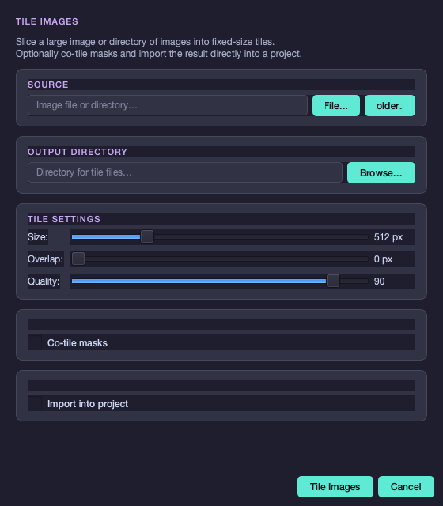
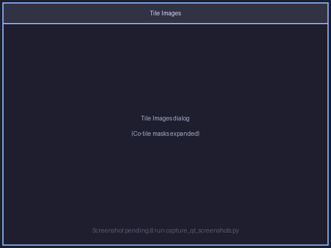
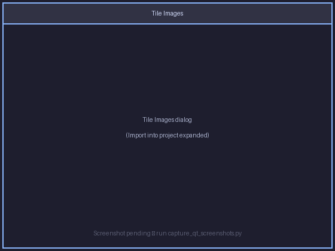

Image Tiling¶
Crackz can slice large photogrammetry photos, aerial mosaics, or any high-resolution image into fixed-size tiles ready for model training and inference. Tiling is available via the GUI (Project → Tile Images…) and the CLI (crackz tile-image).
Overview¶
Large images are too memory-intensive to pass directly to a segmentation model. Tiling breaks them into uniform square patches that match the model's expected input size. Key capabilities:
- Single image or batch — tile one file or an entire directory
- Overlap — extend tiles by N pixels on each edge to reduce boundary artifacts
- Co-register masks — tile binary annotation masks in sync with images (lossless PNG output)
- Project import — send tiles straight into a project; model input size is updated automatically
- Auto-split — randomly distribute tiles into train / val / test sets in one step
Tip: Refresh the tiling screenshots for this page with:
uv run python scripts/capture_qt_screenshots.py \ --scenes tile-images-dialog,tile-images-dialog-masks,tile-images-dialog-import
GUI Usage¶
Open Project → Tile Images… from the menu bar.

Source¶
Click File… to select a single image, or Folder… to select a directory of images. After selection the dialog shows:
- Single image — the pixel dimensions (
2048 × 2048 px) - Directory — the number of images found
Output Directory¶
Click Browse… to choose where tile files will be written. The GUI picker only accepts existing directories, so create the destination folder first if needed.
Tile Settings¶
| Control | Default | Range | Effect |
|---|---|---|---|
| Size | 512 px | 16 – 2048 px | Edge length of each square tile |
| Overlap | 0 px | 0 – (size − 1) px | Pixels shared between adjacent tiles |
| Quality | 90 | 1 – 100 | JPEG quality for image tiles |
Once a single image is loaded, a live estimate appears below the sliders:
≈ 16 tiles · 4 × 4 grid · 512 × 512 px each
Overlap and tile count: With
size = 512andoverlap = 64, adjacent tiles share a 64-pixel border. This increases the tile count but ensures the model sees context at tile edges.
Co-tile Masks¶
Check Co-tile masks to expand the mask section.

| Field | Purpose |
|---|---|
| Masks source | PNG or JPEG mask file (or directory) matching the source images exactly |
| Masks output | Directory for the output mask tiles |
Mask tiles are saved as lossless PNG regardless of source format to preserve binary pixel values.
Import into Project¶
Check Import into project to import tiles directly after tiling completes. A project must be open.

| Field | Default | Purpose |
|---|---|---|
| Image type | Raw | Category to import tiles as: Raw, Train, Val, or Test |
| Auto-split | off | Randomly distribute tiles across train / val / test |
When Auto-split is on, the Image type selector is disabled and three ratio fields appear:
| Ratio | Default |
|---|---|
| Train | 70 % |
| Val | 15 % |
| Test | 15 % |
Ratios must sum to 100 %. An optional Random seed makes the split reproducible.
After a successful import the model input size is automatically set to the tile dimensions in the project configuration.
Running¶
Click Tile Images to start. A progress bar appears while tiling runs in the background. Keep the dialog open until the operation completes; closing is disabled while tiling is running.
When tiling completes without import enabled, the progress bar shows the tile count summary and the Tile Images button re-enables so you can adjust settings and run again.
CLI Usage¶
crackz tile-image --src <source> --out <output> [OPTIONS]
Basic examples¶
Tile a single image into 512 × 512 tiles:
crackz tile-image --src mosaic.jpg --out tiles/
Tile a directory with 256 × 256 tiles and 32 px overlap:
crackz tile-image --src raw_images/ --out tiles/ --tile-size 256 --overlap 32
Tile images and their masks together:
crackz tile-image \
--src raw_images/ \
--out tiles/images/ \
--masks-src annotations/ \
--masks-out tiles/masks/ \
--tile-size 512
Tile and import directly into a project:
crackz tile-image \
--src mosaic.jpg \
--out tiles/ \
--project ~/projects/harbor_survey \
--type raw
Tile and auto-split into train / val / test:
crackz tile-image \
--src raw_images/ \
--out tiles/ \
--masks-src annotations/ \
--masks-out tiles/masks/ \
--project ~/projects/harbor_survey \
--split \
--train-ratio 0.7 \
--val-ratio 0.15 \
--test-ratio 0.15 \
--random-seed 42
All options¶
| Flag | Short | Default | Description |
|---|---|---|---|
--src |
-s |
required | Source image file or directory |
--out |
-o |
required | Output directory for image tiles |
--masks-src |
-ms |
— | Mask file or directory (optional) |
--masks-out |
-mo |
— | Output directory for mask tiles |
--tile-size |
-z |
512 |
Square tile edge length in pixels |
--overlap |
0 |
Pixel overlap between adjacent tiles | |
--quality |
-q |
90 |
JPEG quality for image tiles (1–100) |
--project |
-p |
— | Project directory for auto-import |
--cfg |
-c |
— | YAML config file (alternative to --project) |
--type |
-t |
raw |
Image type when importing: raw, train, val, test |
--split |
false | Auto-split tiles into train / val / test | |
--train-ratio |
0.7 |
Training set fraction (requires --split) |
|
--val-ratio |
0.15 |
Validation set fraction (requires --split) |
|
--test-ratio |
0.15 |
Test set fraction (requires --split) |
|
--random-seed |
— | Integer seed for reproducible splits |
Tile Naming¶
Output files follow the pattern {stem}_{row:04d}_{col:04d}.{ext} in row-major order (top-left origin).
Example: A 2048 × 2048 image mosaic.jpg tiled at 1024 × 1024 (no overlap):
mosaic_0000_0000.jpg mosaic_0000_0001.jpg
mosaic_0001_0000.jpg mosaic_0001_0001.jpg
Mask tiles follow the same naming with .png extension:
mosaic_0000_0000.png mosaic_0000_0001.png
mosaic_0001_0000.png mosaic_0001_0001.png
Edge tiles that fall outside the image boundary are zero-padded to the full tile size.
Tile Count Formula¶
The exact number of tiles for a given image and settings:
step = max(tile_size - overlap, 1)
cols = max(ceil((width - overlap) / step), 1)
rows = max(ceil((height - overlap) / step), 1)
n_tiles = cols × rows
Example — 4096 × 4096 image, tile size 512, overlap 64:
step = 512 - 64 = 448
cols = ceil((4096 - 64) / 448) = ceil(9.0) = 9
rows = 9
n_tiles = 81
Supported Formats¶
| Input | Output |
|---|---|
.jpg, .jpeg, .png, .tif, .tiff, .bmp, .webp |
Image tiles: .jpg (JPEG, quality-controlled) |
Mask: .png, .jpg, .jpeg, .tif, .tiff |
Mask tiles: .png (lossless) |
Python API¶
The tiling functions are in crackz.project.tiling:
from crackz.project.tiling import tile_image, tile_image_with_mask, tile_image_dir
# Tile a single image
tiles = tile_image(
source=Path("mosaic.jpg"),
dest_dir=Path("tiles/"),
tile_size=(512, 512),
overlap=0,
quality=90,
)
# Tile image + mask together
img_tiles, msk_tiles = tile_image_with_mask(
source=Path("mosaic.jpg"),
mask=Path("mask.png"),
dest_dir=Path("tiles/images/"),
mask_dest_dir=Path("tiles/masks/"),
tile_size=(512, 512),
overlap=32,
quality=90,
)
# Batch-tile a directory
img_tiles, msk_tiles = tile_image_dir(
source_dir=Path("raw_images/"),
dest_dir=Path("tiles/images/"),
tile_size=(512, 512),
overlap=0,
quality=90,
mask_source_dir=Path("annotations/"), # optional
mask_dest_dir=Path("tiles/masks/"), # optional
)